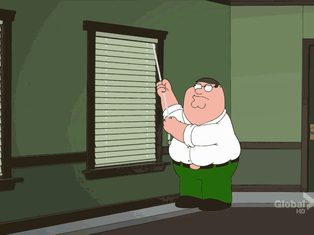

There is not much here yet, but if you believe
hard enough and give me time, there will be a quality site here.
This is my github repository stuff
I am from Sidney (Not Australia) and I am studying Computer Science. I love music, videogames, and laughing.
To show how much I love laughing here is something you can enjoy.
CSS in a nutshell
